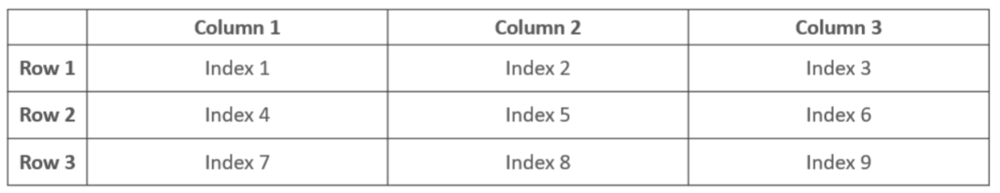
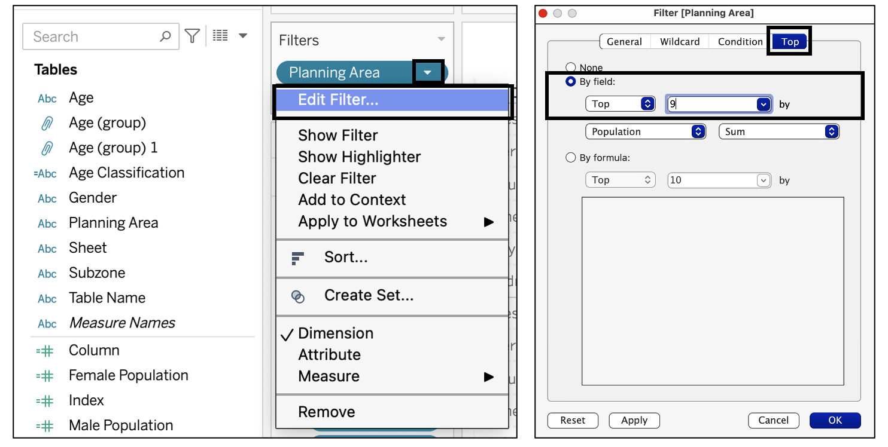
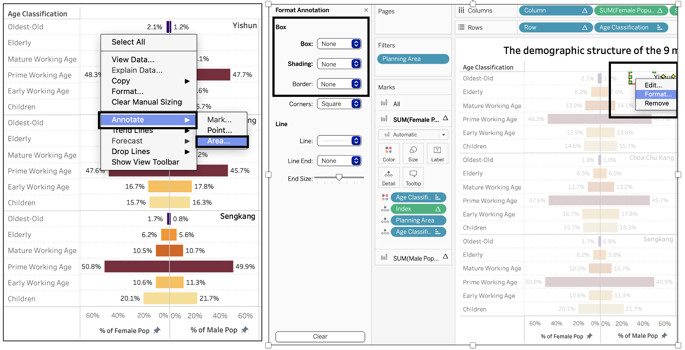
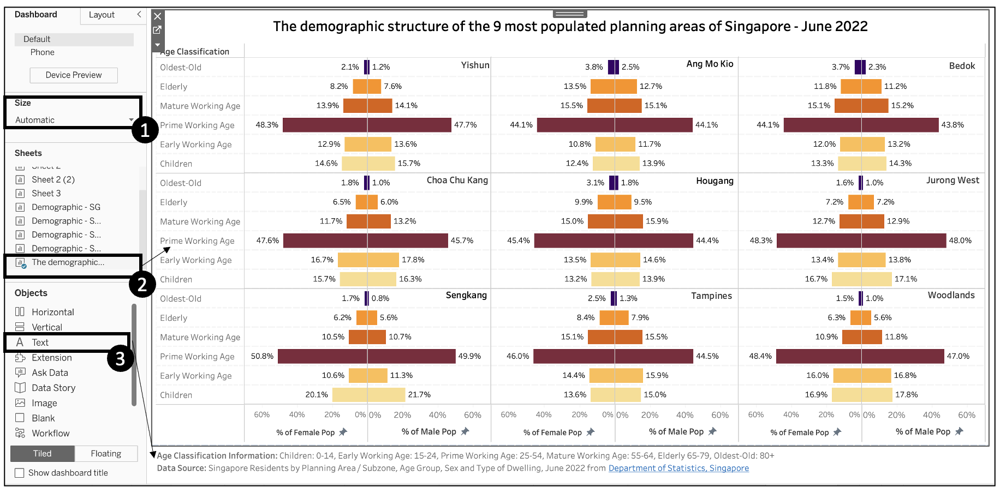

Age-Population Pyramid - Singapore 2022 (Tableau)
1. The Task
The task is to create a trellis display chart, using Tableau, showcasing the age and gender demographic information of Singapore’s population in any nine planning areas of choice. The data used to carry out this visualization is ’Singapore Residents by Planning Area / Subzone, Age Group, Sex and Type of Dwelling, June 2022’ taken from the Department of Statistics, Singapore. A detailed account of the steps and procedures for the visualisation needs to be documented along with an analysis of the observations from the visualisation created.
2. The Selection Process
Singapore encompasses over 50 planning areas, covering Central, East, North, Northeast and West regions. For this exercise, we were tasked with creating the age-sex pyramid for any nine of the planning areas in Singapore. Hence, the criteria selection for this was imperative. The ideal selection for me was to pick the top most populated planning areas as it would be interesting to identify the distribution of the male and female population across different age groups at a granular level. The top 9 populated planning areas were Yishun, Ang Mo Kio, Bedok, Choa Chu Kang, Hougang, Jurong West, Sengkang, Tampines and Woodlands.
Additionally, the dataset provided had a five-year band for each age group such as 0 – 4, 5 – 9,….80-84, 85 & Over. This resulted in eighteen categories for age groups. For a user, this is a lot of information to digest with nine different graphs. Hence, for better grasping power, it is better to reduce the categories within age groups. To identify the age group combinations, I referred to IndexMundi and National Statistics Standard1 and classified the age group as mentioned below:

3. Step-by-step Preparation
3.1 Data Processing
Downloading the dataset: From the main dataset downloaded, the datasets extracted for our age-sex pyramid are, ‘Population of Males by Age Groups and Planning Areas’ and ‘Population of Females by Age Groups and Planning Areas.’

Data Cleaning: The data was cleaned for both ‘Population of Males by Age Groups and Planning Areas’ and ‘Population of Females by Age Groups and Planning Areas’ in MS Excel. The’Planning Area’ sections by ‘Age’ were combined. The cleaning process entailed removing the the ‘Total’ columns using ‘command + -’. Additionally, the empty cells between each planning area were filled such that each subzone had a corresponding planning area alongside.

Pivoting the worksheets in Tableau: It is desirable to have data structured as long and lean for better analysis in Tableau. Hence, the short and wide data structure in MS Excel worksheets was opened in Tableau, and all the five-year age bands were pivoted to the long and lean data structure. This process is done for both the male and female worksheets.
a) Load the ‘Population of Males by Age Groups and Planning Areas’ saved as ‘Male Population’ and ‘Population of Females by Age Groups and Planning Areas’ saved as ‘Female Population’ onto Tableau separately. To load the datasets, go to ‘Microsoft Excel’ and click on the desired file.

b) In ‘Data Source’, select all the age groups from ‘0-4’ to ‘85 & Over’ using the ‘shift’ key and then go to drop down arrow next to ‘Abc’ under any of the age groups and select ‘Pivot’.

c) Go to ‘Data’ and select ‘Export Data to csv’, ensure that this process is completed for both the ‘Male population’ and ‘Female population’.

d) The column names retained in each MS Excel worksheets post pivoting were ‘Planning Area’, ‘Subzone’, ‘Age’ (for five-year age bands), ‘Gender’ (Male or Female, depending on the data worksheet), and ‘Population’ (population count). Additionally, add another column and call it ‘Gender’ and put ‘Male’ and ‘Female’ according to the worksheet required.

e) Then combine these workbooks as separate sheets in another workbook, saved as ‘SG Population by Subzone’

3.2 Preparing the Tableau Dashboard
3.2.1 Union of the Male and Female Population datasets
Relaunch Tableau and load the newly created MS Excel workbook ‘SG Population by Subzone’ which will display the ‘Male Population’ and the ‘Female Population’ sheets. Click on ‘New Union’ and in the dialog box that appears, drag the two sheets therein and click ‘OK’.

3.2.2 Creating 3X3 Panel Chart
The age-sex pyramid chart needs to be illustrated for 9 planning areas. If it were to be created side-by-side then the dashboard would appear cluttered. Hence, the most feasible option was to create a 3X3 matrix that would look aesthetically pleasing. To create this view, the following steps were taken
a) Create Parameter: Go to ‘Sheet 1’ and under the ‘Data’ tab, right click and select ‘Create Parameter’. In the dialog box, change the ‘Current value’ to ‘3’ and the ‘Data type’ to ‘Integer’

b) Create Calculated Field: In the ‘Data’ tab, right click and select ‘Create Calculated Field’. Therein type the formula for ‘Index’, ‘Row’ and ‘Column’ as provided in the screenshot below.

c) The matrix outline design is as follows:

3.2.3 Creating variables for ‘Male Population’ and ‘Female Population’
After the union of the two sheets on Tableau, the gender column has both males and females. In the age-sex pyramid, we need to display males on one side and females on the other side. To do this, we create two new conditional calculated fields called ‘Male Population and ’Female Population’

3.2.4 Creating Age Group Variable
The age groups appear in five year age band, which results in eighteen categories ranging from age 0 to 85 and above. However, for ease of interpretation, it is recommended to have not more than five to six groups. Hence, we create a calculated field called ‘Age Classification’ to further bin the age groups. The rationale has been detailed in point ‘2. The Design’.

3.2.5 Creating the Age-Sex Pyramid
The final sheet in Tableau will appear like this:

1. Filters Panel: The only filter that has been applied is by ‘Planning Area’. Drag ‘Planning Area’ under ‘Filter’, then click on the down arrow in ‘Planning Area’ and select ‘Edit Filter’ and navigate to the ‘Top’ tab, under ‘By field’ select ‘Top’ and enter ‘9’ in the field next to it. In ‘by’ select ‘Population’ and the measure as ‘Sum’

Row/Column Variables:
a) Drag the following variables in the row and column respectively. In the variable ‘Column’ and ‘Row’, click on the down arrow and make it ‘Discrete’.


b) When ‘Female Population’ and ‘Male Population’ is dragged onto columns, ensure that the measure chosen for these variables is ‘SUM’, respectively.

For both the ‘SUM(Female Population)’ and ‘SUM(Male Population)’, click on the down arrow and ‘Edit Table Calculation’. In the dialog box, select ‘percent of Total’ in ‘Calculation Type’, select ‘Specific Dimensions’ in ‘Compute Using’ and tick on only ‘Age Classification’.

The Female population on the left hand side needs to appear as a mirror image of the bar chart of the male population. To get the desired butterfly effect, right click on the female population axis and select ‘Edit Axis’ and in ‘Scale’ check on ‘Reversed’, also change the axis title as required.
3.2.6 Aesthetics
Aesthetics are an important component of visual analytics, hence the charts need to look visually appealing. To ensure that, the font size was standardized and the font colors were kept the same throughout, only the title and axis colors are darker to ensure that they are readable and clear.
a) Grid lines: The grid lines were required to be formatted, so that one can easily follow the age group in each planning area. For this purpose, we right click anywhere within the graph, select ‘Format’ and change the ‘Fields’ in the left pane to ‘Age Classification’, therein navigate to ‘Rows’ and change the grid lines to dotted, repeat the same for ‘Sheet’ tab.

b) Annotating the Planning Areas: Since we decided to use the 3X3 matrix, the planning areas were not automatically named by Tableau, hence the workaround to that, we right click inside each planning region - select ‘Annotate’ and then ‘Area’. Post that, type the name of the planning area in the dialog box that opens. Post that, right click on the planning area box and click ‘Format’, in the ‘Format Annotation’ pane, select ‘None’ for ‘Box’, ‘Shading’ and ‘Border’.

3.2.7 Making the Dashboard
To create the dashboard, first add dashboard from the bottom. Then go to the ‘Dashboard’ pane:
- Select ‘Size’ as ‘Automatic’.
- Drag the final sheet ‘The demographic structure of the 9 most populated areas of Singapore -June 2022’ inside the plain sheet.
- Drag ‘Text’ below the sheet as shown in the screenshot below and write down the text for the age classification and the data source.
- Go to ‘Server’ < ‘Tableau Public’ < ‘Save to Tableau Public’. It will ask for your credentials and then upload this dashboard to Tableau Public!
 
4. Observation and Insights

Note: Total population in the context below refers to the population of the nine planning areas highlighted in the chart above
Key Finding 1:
From the age-sex pyramid, we can discern with certainty that Singapore has a constrictive population pyramid. This chart appears like a beehive, protruding in the middle and tapering down towards the younger and older population. These charts display smaller proportions of the younger population thereby depicting a population that is ageing and shrinking2. These population pyramids are a common phenomenon in highly developed countries with low birth rates and low death rates. Countries with such a constrictive age-sex pyramid indicate that the population is increasing in high social and economic development with better access to education and healthcare for most of the population3. The ageing population of Singapore is a concern for the government as being a small nation with limited resources, the ageing trend will impact Singapore more acutely. They have introduced policies such as ‘Made for Families’ to support and encourage Singaporeans towards marriage and parenthood. Additionally, policies such as ‘The Refresh of the Action Plan for Successful Ageing and Population’ helps empower the aged population4.
Key Finding 2:
One can see a uniform spread through the age profiles across the board, with minute variations observed across the nine planning areas. The dominant age profile is the ‘primary working age’ (PWA) population (aged 25 - 54), accounting for 46.55% of the total population. Children (aged 0 – 14) account for roughly 16% of the total population.
(a) A higher proportion of PWA and children population in Sengkang, Jurong West and Woodlands: Sengkang records the highest PWA and children population, closely followed by Jurong West and Woodlands, making them the most sought-after dwelling area by the active working population. This can be attributed to the higher presence of children-bearing families that are leveraging the high connectivity of public transport to the central region whilst paying comparatively lower rental rates for the residential properties in these areas.
(b) A higher proportion of ‘Elderly’ and ‘Oldest-Old’ and a lower proportion of ‘PWA’ and ‘children’ populations in Bedok, Ang Mo Kio, Hougang: The elderly and oldest-old populations account for the lowest proportion in the overall age profile and are more densely populated in Ang Mo Kio, Bedok and Hougang whereas their presence in the planning areas mentioned in 2 (a) is the least. These areas also form a V shape indicative of a higher elderly and aged population indicative of the fact that there is a higher aged population in those areas. These places have abundant amenities that tailor to the needs of the elderly such as coffee shops, marketplaces and leisure places where the aged population can socialise with one another5.
Key Finding 3:
As we can see in the graphs above, the proportion of females across most age profiles and planning areas is higher than males, albeit marginally. The proportions are relatively equal among the ‘Early Working Age’, ‘Primary Working Age’ and ‘Mature Working Age’ populations.
(a) Higher Proportion of Females in the elderly and oldest-old categories: There is an increasing trend for the female population increasing post the age of 65, whereas the converse is true for the male population. This clearly implies that female life expectancy is longer than men’s. In fact, this trend has been observed in Singapore since 20106. This difference is more pronounced in areas such as Bedok, Ang Mo Kio, Hougang and Yishun.
- Lower Proportion of Females in the ‘Children’ population: The proportion of children that are males is higher across the board in the ‘children’ category which could be indicative of higher infant mortality rates for females. This difference is more pronounced in Sengkang, Tampines, Jurong West and Woodlands.
Footnotes
IndexMundi: https://www.indexmundi.com/singapore/age_structure.html#:~:text=Definition%3A%20This%20entry%20provides%20the,years%20and%20over%20(elderly)
National Statistics Standard: https://www.singstat.gov.sg/-/media/files/standards_and_classifications/nsa.ashx↩︎
Study.com: https://study.com/academy/lesson/population-pyramids-definition-types-stages.html↩︎
Country Meters: https://countrymeters.info/en/Singapore↩︎
Strategy Group: https://www.strategygroup.gov.sg/files/media-centre/publications/Population-in-Brief-2022.pdf↩︎
https://www.tp.edu.sg/schools-and-courses/students/schools/bus/about-bus/storiesco/life/ageing-in-place.html↩︎
SingStat Report: https://www.singstat.gov.sg/-/media/files/publications/population/population2021.pdf↩︎